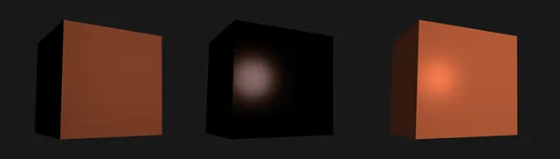

PBR is the current standard for how to calculate 3-D lighting and how to render 3-D scenes
This system is on creating an accurate reflection for how actually look without having to rely on expensive algorithms/systems like raytracing
For more information on textures and other parameters visit Shader Components
NdotL – How closely a pixel’s normal faces towards a light (from 0 to 1)
float NdotL = saturate(dot(normalWS, mainLight.direction));
Soft surface lighting
floats viewDir = GetWorldSpaceNormalizeViewDir(positionws);
floats reflectDir = reflect(-mainLight.direction, normalws);
float spec = pow(max(dot (viewDir, reflectDir), 0.0), _Shininess);
half3 specular = spec * mainLight.color * _SpecularStrength;
Bright glossy lighting
half3 diffuse = NdotL * mainLight.shadowAttenuation * albedo * mainLight.color;

Check here for some additional formulae